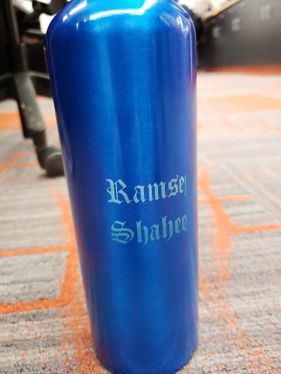
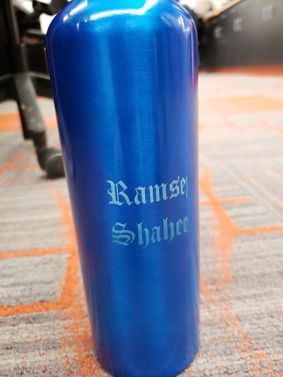

This roation we used the laser cutter to create a clock, bookermark and connectable shapes. For software we used Coreldraw to create designs with cutting and engraving on the cutter.
For each object we used different materials in the laser cutter including cardboard, wood and metal. With the laser cutter, I used the rotary
attachment to spell my name on a water bottle. For the clock, once we used the laser cutter to cut out the clock shape we had to fit the hands
and the battery of the clock on to the wooden frame.
